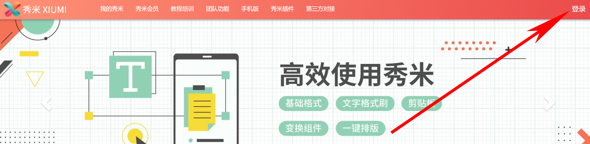
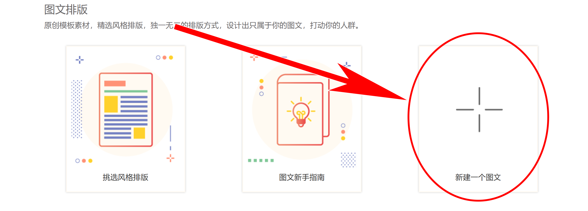
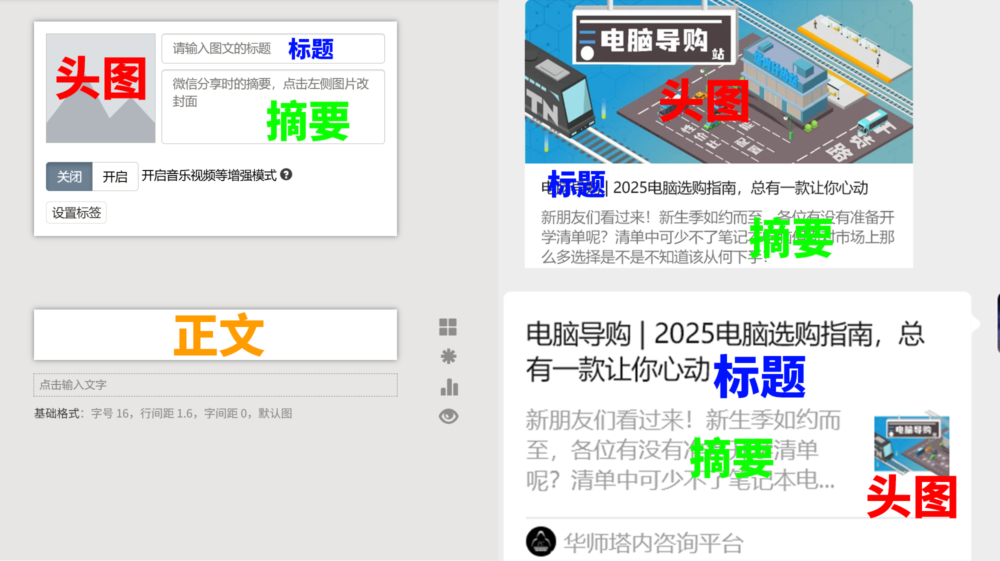
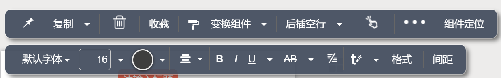
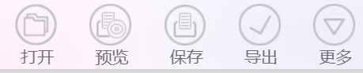
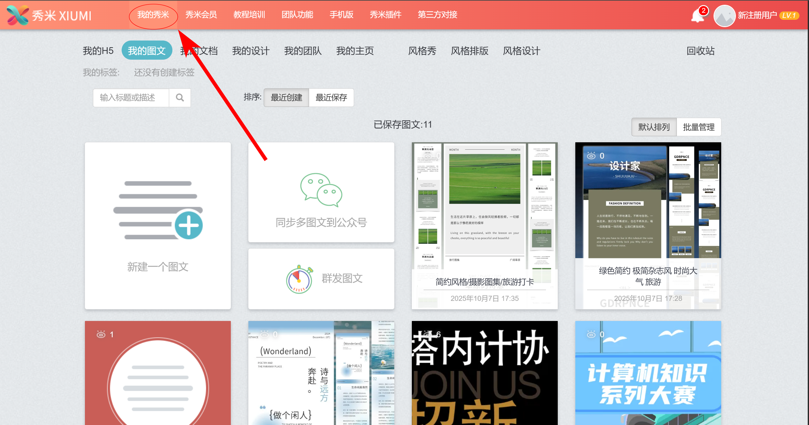

准备工作
首先需要注册并登录秀米账号，访问秀米官网 https://xiumi.us/#/。

秀米官网首页
登录后，在首页点击“新建一个图文”来创建新项目。

创建新图文项目
认识界面
新建项目后进入编辑界面。主要分为三个区域：左侧的素材区，中间的编辑区，以及右侧的预览区（模拟手机端推文效果）。

编辑区和对应的推文区域
在编辑区输入文字时，会弹出文字工具栏，用于调整字体、颜色、大小、对齐方式等。

输入文字时弹出的文字工具栏
最上方是选项栏，包含保存、预览、导出、设置等核心功能。

最上方的选项栏
点击“我的秀米”可以查看和管理你所有的图文项目。

“我的秀米”界面